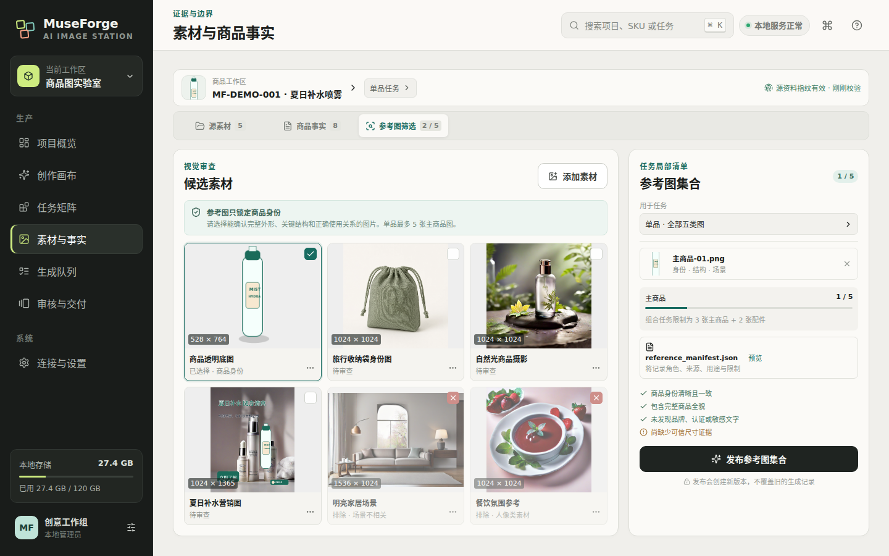
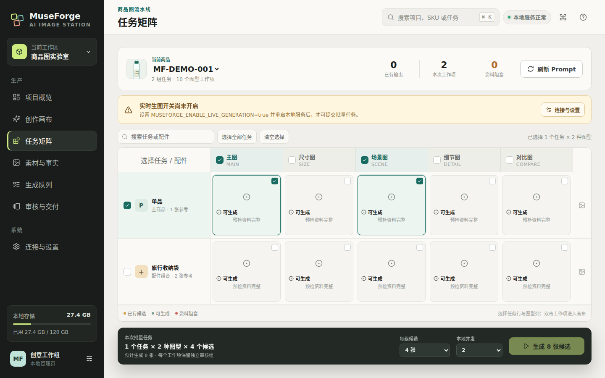
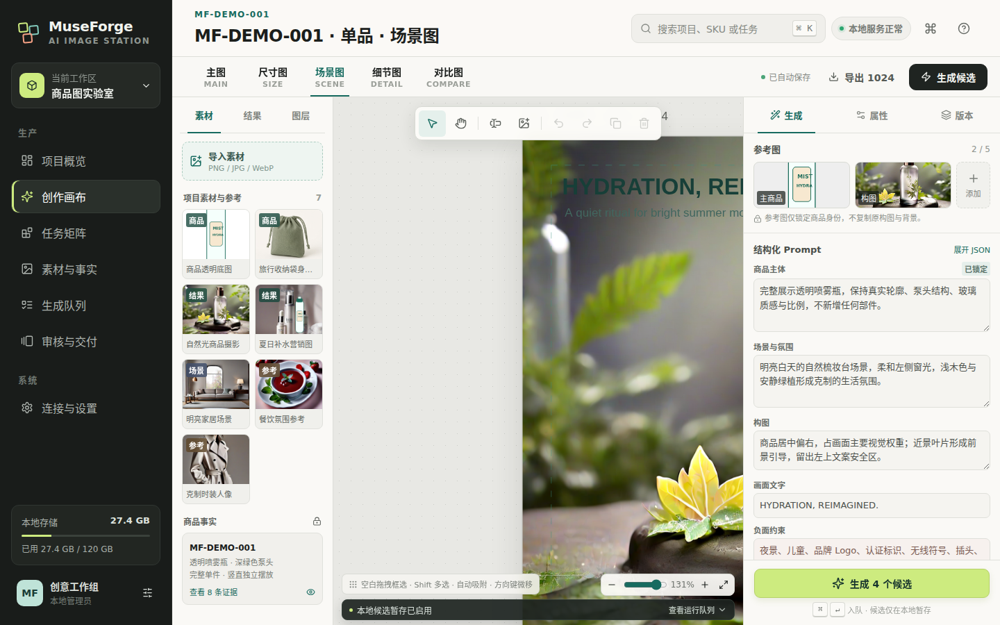

批量商品图需要生产系统，不只是提示词
电商视觉团队既要保证商品外观和事实准确，又要覆盖主图、尺寸图、场景图、细节图和对比图，还要管理组合配件、参考图、候选版本、审核决策和正式交付。零散文件夹与一次性 Prompt 很难保留这些边界，也无法解释一张图为什么被生成、保留或删除。
电商视觉团队既要保证商品外观和事实准确，又要覆盖主图、尺寸图、场景图、细节图和对比图，还要管理组合配件、参考图、候选版本、审核决策和正式交付。零散文件夹与一次性 Prompt 很难保留这些边界，也无法解释一张图为什么被生成、保留或删除。
项目覆盖 React 19 / TypeScript / Vite 工作台、Zustand 状态、Konva 编辑画布、FastAPI / Pydantic API、SQLite 与本地工作区文件、异步生成运行记录，以及内置 generate-product-images Skill 的受控执行边界。




生成前校验商品身份、事实约束、参考角色、数量和 manifest 一致性，不把临时素材默认当作可信证据。
主图、尺寸图、场景图、细节图和对比图拥有独立规则，并按单品或配件组合展开为明确工作项。
FastAPI 先持久化完整运行计划，再交给后台执行器；浏览器通过真实运行记录和结构化事件查看进度。
生成结果先进入 run 级临时目录，审核者明确保留后才原子移动到正式资产库，被拒候选可安全清理。
图片与文字图层支持拖拽、缩放、旋转、多选、吸附、对齐、分布、锁定、排序、撤销和干净导出。
每个 product + task + shot 使用独立画布文档，通过 SQLite、会话缓存和串行保存队列降低覆盖与丢稿风险。
源商品、配件、组合任务、Prompt、参考图、临时候选和正式输出拥有明确目录边界，可由内置 Skill 增量准备。
API 绑定 loopback，脚本路径由服务端配置，子进程使用参数数组；路径穿越、隐藏目录、越界文件和目标覆盖会被拒绝。
工作区扫描商品、配件、Prompt 和参考清单，建立生成前的事实与视觉边界。
用户选择任务、图型、候选数和并发，服务端重新验证范围与 readiness 后创建运行。
Skill 生成的候选先留在私有暂存区，结构化事件更新进度，人工决定保留或删除。
保留候选原子晋升为正式资产，再进入对应任务画布完成构图、文案和最终导出。
http://localhost:38120/api/health 返回 status: ok，workspace 与 workflow 均 ready。把 reference manifest 的编辑、校验和发布完整纳入工作台，减少文件系统往返。
补齐持久 worker、心跳、租约、取消、失败项重试和更完整的运行诊断时间线。
继续加入裁切与适配、蒙版、行内文字、复用组、标尺、安全区和渠道模板。
通过只出站的本地 companion 同步事件和决策，仅上传被保留的资产，保留本地文件与密钥边界。